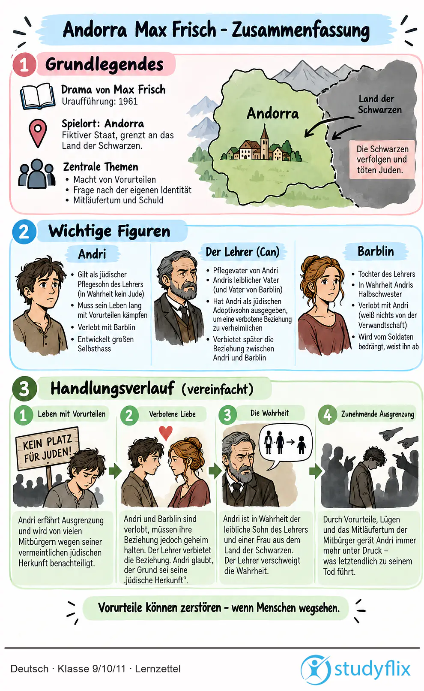

<!doctype html><html lang="de"><meta charset="utf-8"><meta name="viewport" content="width=device-width,initial-scale=1"><title>Figuren und Beziehungen · bergmedia.study</title><style>body{margin:0;background:#080e18;color:#f4f7fc;font:16px system-ui,Arial}button{cursor:pointer;border:1px solid #36536a;border-radius:12px;padding:13px 17px;background:#33ccff;color:#07131d;font-weight:750}button.secondary{background:#182535;color:white}button:disabled{opacity:.65;cursor:default}h2{line-height:1.15}h3{line-height:1.3}.eyebrow{color:#33ccff;font-size:12px;font-weight:800;letter-spacing:1.4px;text-transform:uppercase}p{line-height:1.65}svg{max-width:100%}.germanLessonStage{display:none}.germanLessonStage[data-stage="0"]{display:block}</style><main id="germanContent"></main><script>
function gEsc(t){return String(t).replace(/&/g,'&amp;').replace(/</g,'&lt;').replace(/>/g,'&gt;').replace(/"/g,'&quot;')}
function germanBack(){location.href='index.html'}
function germanStart(){location.href='index.html#deutsch'}
function germanFigureDiagram(){
 return '<h3>Figurenkonstellation · Wer gehört zu wem?</h3><div style="max-width:780px;margin:16px auto;padding:18px;background:#0a1521;border:1px solid #304456;border-radius:16px"><svg viewBox="0 0 640 330" style="width:100%;height:auto" role="img" aria-label="Figurenkonstellation: Lehrer Can ist Vater von Andri und Barblin, Andris Mutter stammt aus dem Land der Schwarzen, Andri und Barblin sind Halbgeschwister."><defs><marker id="deArrow" markerWidth="8" markerHeight="8" refX="6" refY="3" orient="auto"><path d="M0 0L6 3L0 6" fill="none" stroke="#33ccff" stroke-width="1.5"/></marker></defs><g stroke="#33ccff" stroke-width="2" fill="none"><path d="M210 83L255 211" marker-end="url(#deArrow)"/><path d="M420 83L340 211" marker-end="url(#deArrow)"/><path d="M210 83L475 211" marker-end="url(#deArrow)"/><path d="M320 244L455 244" stroke="#e5b96d" stroke-dasharray="7 5"/></g>'+[["Lehrer Can",115,20],["Andris Mutter",375,20],["Andri",220,210],["Barblin",455,210]].map((a,i)=>'<rect x="'+a[1]+'" y="'+a[2]+'" width="'+(i===1?175:140)+'" height="62" rx="12" fill="#142639" stroke="#44647c"/><text x="'+(a[1]+(i===1?87:70))+'" y="'+(a[2]+36)+'" fill="#eaf5ff" font-size="18" text-anchor="middle" font-weight="700">'+a[0]+'</text>').join('')+'<text x="385" y="232" fill="#e5b96d" font-size="13" text-anchor="middle">Halbgeschwister</text><text x="320" y="309" fill="#b9ccdd" font-size="15" text-anchor="middle">Andri gilt fälschlich als jüdischer Pflegesohn.</text></svg></div><p><strong>Erklärung:</strong> Der Lehrer Can ist der leibliche Vater von Andri und Barblin. Andris Mutter stammt aus dem Land der Schwarzen. Deshalb sind Andri und Barblin Halbgeschwister. Die Lüge des Lehrers beeinflusst Andris gesamtes Leben.</p><h3 style="margin-top:30px">Weitere Figuren und ihre Rolle</h3><p class="small">Fünf Figuren beziehungsweise Gruppen, fünf Formen von Ausgrenzung und Mitverantwortung.</p><div style="display:grid;grid-template-columns:repeat(auto-fit,minmax(190px,1fr));gap:12px;margin:18px 0">'+[
["Tischler","⚒","Berufliche Diskriminierung","Er beurteilt Andris Fähigkeiten anhand von Vorurteilen statt seiner Arbeit.","Vorurteil → Benachteiligung"],
["Doktor","⚕","Antisemitische Vorurteile","Seine Äußerungen zeigen, dass auch gebildete Menschen Vorurteile verbreiten.","Bildung ≠ Vorurteilsfreiheit"],
["Pater","✝","Gut gemeinte Zuschreibungen","Er will Andri helfen, bestätigt dabei aber stereotype Vorstellungen.","Hilfe ohne echtes Verstehen"],
["Peider","⚡","Gewalt und Machtmissbrauch","Er bedroht und demütigt Andri und Barblin und nutzt seine Stellung aus.","Vorurteil → Gewalt"],
["Andorraner","♟","Gesellschaftliche Mitverantwortung","Viele sehen zu, rechtfertigen ihr Verhalten oder greifen nicht ein.","Schweigen → Mitschuld"]
].map((x,i)=>'<article style="padding:18px;background:linear-gradient(150deg,#142b3d,#0d1724);border:1px solid #35516b;border-radius:16px"><div style="display:flex;align-items:center;gap:12px;margin-bottom:12px"><span aria-hidden="true" style="display:grid;place-items:center;flex:0 0 54px;width:54px;height:54px;border-radius:14px;background:#1b3d51;color:#64d7ff;font-size:30px">'+x[1]+'</span><div><strong style="font-size:18px">'+x[0]+'</strong><div style="font-size:12px;color:#9cb9cd;margin-top:4px">'+x[2]+'</div></div></div><p style="font-size:14px;line-height:1.6;margin:0 0 14px">'+x[3]+'</p><div style="border-top:1px solid #35516b;padding-top:10px;color:#68d9ff;font-size:12px;font-weight:700">'+x[4]+'</div></article>').join('')+'</div><div style="border:1px solid #365a73;border-radius:16px;background:#0b1d2a;padding:20px"><h3 style="margin:0 0 12px">Schaubild: Wie entsteht Mitverantwortung?</h3><div style="display:flex;flex-wrap:wrap;align-items:center;justify-content:center;gap:8px">'+[["Tischler + Doktor + Pater","Vorurteile"],["Peider","Gewalt"],["Andorraner","Wegsehen"],["Andri","Tragisches Ende"]].map((x,i)=>'<div style="display:flex;align-items:center;gap:8px"><div style="padding:12px;border:1px solid #41657c;background:#142d40;border-radius:12px;text-align:center;min-width:115px"><strong style="display:block;font-size:13px">'+x[0]+'</strong><span style="display:block;font-size:12px;color:#9cc5da;margin-top:5px">'+x[1]+'</span></div>'+(i<3?'<span aria-hidden="true" style="font-size:22px;color:#54d4ff">→</span>':'')+'</div>').join('')+'</div><p class="small" style="margin:14px 0 0">Das Schaubild vereinfacht die Zusammenhänge: Die Figuren handeln unterschiedlich, tragen aber auf verschiedene Weise zur Ausgrenzung Andris bei.</p></div>'
}
function germanThemeDiagram(){
return '<h3>Vom Vorurteil zur Ausgrenzung</h3><div style="display:grid;grid-template-columns:repeat(auto-fit,minmax(155px,1fr));gap:10px;margin:16px 0">'+[
["1. Fremdbild","Andere behaupten, Andri habe bestimmte Eigenschaften."],
["2. Ausgrenzung","Andri erlebt Benachteiligung und Demütigung."],
["3. Selbstbild","Er übernimmt die Zuschreibungen zunehmend."],
["4. Tragödie","Die Gemeinschaft verweigert ihm Schutz."]
].map((x,i)=>'<div style="padding:18px;background:#0e2030;border:1px solid #35506b;border-radius:14px"><div style="font-size:25px;color:#33ccff;margin-bottom:8px">'+(i+1)+' →</div><strong>'+x[0]+'</strong><p class="small">'+x[1]+'</p></div>').join('')+'</div><p class="small">Das Schaubild verdeutlicht einen Deutungszusammenhang, keine wörtliche Aussage des Dramas.</p>';
}
function germanStoryVisual(){
 const phases=[
 ["01","AUSGANGSLAGE","Die Lüge","Andri gilt als jüdischer Pflegesohn. Seine Herkunft wird verschwiegen.","user-round"],
 ["02","KONFLIKT","Vorurteile prägen Andri","Er liebt Barblin, erlebt Ausgrenzung und übernimmt das Fremdbild.","heart-crack"],
 ["03","TRAGÖDIE","Die Gesellschaft schaut weg","Nach dem Einmarsch wird Andri bei der Judenschau ausgewählt und getötet.","shield-alert"]
 ];
 return '<div class="eyebrow" style="margin-top:28px">Schritt 2 · Die Geschichte verstehen</div><h3>Die Handlung in drei Phasen</h3>'+
 '<div style="display:grid;grid-template-columns:repeat(auto-fit,minmax(185px,1fr));gap:12px;margin:18px 0 22px">'+phases.map((x,i)=>'<article style="background:linear-gradient(145deg,#102b3d,#101722);border:1px solid #30536c;border-radius:16px;padding:20px;min-height:190px"><div style="font-size:36px;color:#33ccff;font-weight:800;letter-spacing:-2px">'+x[0]+'</div><div class="eyebrow" style="margin:8px 0">'+x[1]+'</div><h3 style="margin:8px 0">'+x[2]+'</h3><p style="font-size:14px;line-height:1.55">'+x[3]+'</p></article>').join('')+'</div>'+
 '<div style="padding:16px;border:1px solid #31536a;border-radius:14px;background:#0c1e2a"><strong>Das musst du verstehen</strong><p style="margin:8px 0 0">Die Andorraner machen sich ein festes Bild von Andri. Er übernimmt dieses Fremdbild zunehmend. Als die Verfolgung eskaliert, schützt ihn niemand. Das Drama zeigt, wie Vorurteile und fehlende Zivilcourage zusammenwirken.</p></div>'+
 '<h3 style="margin-top:30px">Die zwölf Bilder als Zeitstrahl</h3><p class="small">Die Handlung ist in zwölf Bilder gegliedert. Öffne eine Station, um die wichtigsten Ereignisse zu lernen.</p>'+
 '<div style="display:grid;grid-template-columns:repeat(auto-fit,minmax(210px,1fr));gap:10px;margin:16px 0">'+germanTwelve.map((x,i)=>'<details style="border:1px solid #304456;border-radius:13px;background:#101b29;padding:15px"><summary style="cursor:pointer;list-style:none;display:flex;align-items:center;gap:10px"><span style="background:#163b50;color:#55d8ff;border-radius:10px;padding:8px 11px;font-weight:800">'+String(i+1).padStart(2,"0")+'</span><strong>'+gEsc(x[0])+'</strong><span style="margin-left:auto;color:#8ea8ba">＋</span></summary><p style="margin:12px 0 0;line-height:1.6">'+gEsc(x[1])+'</p></details>').join('')+'</div>'+
 '<h3>Der Lernzettel als Schaubild</h3><p class="small">Der Lernzettel fasst Grundwissen, Figuren und die wichtigsten Handlungsschritte zusammen. Nutze ihn zur Wiederholung vor dem Quiz.</p>';
}
function germanFiguresLessons(){
 const data=[
 ["Figurenkonstellation","Wer ist mit wem verwandt?","Lehrer Can ist der leibliche Vater von Andri und Barblin. Andris Mutter stammt aus dem Land der Schwarzen. Andri und Barblin sind Halbgeschwister, wissen das zunächst aber nicht.","Warum sind Andri und Barblin Halbgeschwister?",["Sie haben denselben Vater.","Sie haben dieselbe Mutter.","Sie wurden gemeinsam adoptiert."],0],
 ["Die Lüge des Lehrers","Warum wird Andri als Pflegesohn ausgegeben?","Can behauptet, Andri sei sein jüdischer Pflegesohn. Damit verheimlicht er seine frühere Beziehung zu Andris Mutter. Die Lüge beeinflusst Andris gesamtes Leben.","Was verheimlicht der Lehrer?",["Andris Beruf.","Dass Andri sein leiblicher Sohn ist.","Dass Barblin seine Schülerin ist."],1],
 ["Andri und Barblin","Liebe, Herkunft und tragischer Konflikt","Andri und Barblin lieben einander. Can verbietet die Beziehung, ohne die wahre Verwandtschaft rechtzeitig offenzulegen. Die fehlende Erklärung verschärft den Konflikt.","Warum kann Can die Beziehung nicht ehrlich erklären?",["Weil er die Herkunftslüge aufrechterhält.","Weil Andri verreisen will.","Weil Barblin den Tischler heiratet."],0],
 ["Tischler und Doktor","Wie entstehen Nachteile aus Vorurteilen?","Der Tischler beurteilt Andri nicht unvoreingenommen nach seinen Fähigkeiten. Der Doktor äußert antisemitische Stereotype. Beide verstärken die gesellschaftliche Ausgrenzung.","Welche Aussage beschreibt die Rolle des Tischlers?",["Er schützt Andri vor der Judenschau.","Er bewertet Andri durch Vorurteile statt durch Leistung.","Er erklärt Andri die Wahrheit."],1],
 ["Pater und Peider","Hilfe, Zuschreibungen und Gewalt unterscheiden","Der Pater meint es gut, bestätigt aber stereotype Vorstellungen. Peider bedroht und demütigt Andri und verkörpert Gewalt und Machtmissbrauch.","Was zeigt die Figur des Paters?",["Auch gut gemeinte Zuschreibungen können Vorurteile festigen.","Er ist Andris leiblicher Vater.","Er führt die Judenschau durch."],0],
 ["Die Andorraner","Wer trägt Verantwortung?","Viele Bewohner verbreiten Vorurteile, rechtfertigen ihr Verhalten oder sehen weg. Als die Schwarzen Andorra besetzen, schützen sie Andri nicht. Das Drama stellt deshalb die Frage nach gesellschaftlicher Mitschuld.","Welche Form der Verantwortung zeigt das Verhalten der Zuschauer?",["Sie helfen Andri bei der Flucht.","Sie handeln ohne jedes Vorurteil.","Schweigen und Nicht-Eingreifen können Mitschuld begründen."],2]
 ];
 const cards=data.map((d,i)=>'<section class="germanLessonStage" data-stage="'+i+'" style="'+(i?'display:none;':'')+'position:fixed;inset:0;z-index:9999;overflow-y:auto;box-sizing:border-box;padding:clamp(20px,5vw,65px) max(20px,calc((100vw - 780px)/2));background:radial-gradient(circle at top left,#12374b,#080e18 65%)"><div style="display:flex;align-items:center;justify-content:space-between;gap:12px"><button class="secondary" onclick="germanBack()">← Übersicht</button><span class="eyebrow">FIGUREN · '+(i+1)+' / '+data.length+'</span></div><div style="height:7px;background:#21394a;border-radius:20px;margin:22px 0;overflow:hidden"><div style="height:100%;width:'+Math.round((i+1)/data.length*100)+'%;background:#33ccff"></div></div><div class="eyebrow">Schritt 1 · Verstehen</div><h2 style="font-size:clamp(26px,4vw,40px)">'+d[0]+'</h2><p style="color:#b8cfdf">'+d[1]+'</p><div style="padding:18px;border:1px solid #31546a;border-radius:16px;background:#102638">'+(i===0?germanFigureDiagram():'<div style="display:flex;gap:12px;align-items:center;margin-bottom:14px"><span style="font-size:34px;color:#33ccff">'+["♧","◈","♡","⚖","✦","◎"][i]+'</span><strong>'+d[0]+'</strong></div>')+'<p style="line-height:1.75">'+d[2]+'</p></div><div style="padding:18px;border:1px solid #31546a;border-radius:16px;margin-top:20px"><div class="eyebrow">Schritt 2 · Wissen prüfen</div><h3>'+d[3]+'</h3><div class="germanLessonAnswers" style="display:grid;gap:9px">'+d[4].map((ans,j)=>'<button type="button" class="secondary" style="white-space:normal;text-align:left" onclick="germanLessonAnswer('+i+','+(j===d[5])+',this)">'+gEsc(ans)+'</button>').join('')+'</div><p class="germanLessonFeedback" role="status" aria-live="polite"></p><button class="germanLessonNext" style="display:none" onclick="germanLessonNext('+i+')">'+(i===data.length-1?'Lernweg abschließen':'Nächste Figur kennenlernen →')+'</button></div></section>').join('');
 return '<p>Sechs kurze Lernstationen. Nach jeder Erklärung folgt eine Frage. Erst dann öffnet sich die nächste Figur.</p>'+cards+'<div id="germanLessonComplete" style="display:none;position:fixed;inset:0;z-index:9999;overflow:auto;box-sizing:border-box;padding:clamp(30px,8vw,100px) max(20px,calc((100vw - 740px)/2));background:radial-gradient(circle at top left,#12374b,#080e18 65%)"><h2>Figuren und Beziehungen verstanden!</h2><p>Jetzt kannst du dein Wissen mit den 20 Aufgaben überprüfen.</p><button onclick="germanStart(\'practice\')">20 Fragen starten</button> <button class="secondary" onclick="germanBack()">Zur Übersicht</button></div>';
}

function germanLessonAnswer(index,correct,button){const stage=document.querySelector('.germanLessonStage[data-stage="'+index+'"]');if(!stage)return;const feedback=stage.querySelector('.germanLessonFeedback');if(!correct){feedback.textContent='Noch nicht richtig. Lies die Erklärung und versuche es erneut.';return;}feedback.textContent='Richtig!';stage.querySelectorAll('.germanLessonAnswers button').forEach(b=>b.disabled=true);stage.querySelector('.germanLessonNext').style.display='inline-block'}
function germanLessonNext(index){const stage=document.querySelector('.germanLessonStage[data-stage="'+index+'"]');if(!stage)return;stage.style.display='none';const next=document.querySelector('.germanLessonStage[data-stage="'+(index+1)+'"]');if(next){next.style.display='block';next.scrollTop=0}else{document.getElementById('germanLessonComplete').style.display='block'}}
document.getElementById('germanContent').innerHTML=germanFiguresLessons();
</script></html>